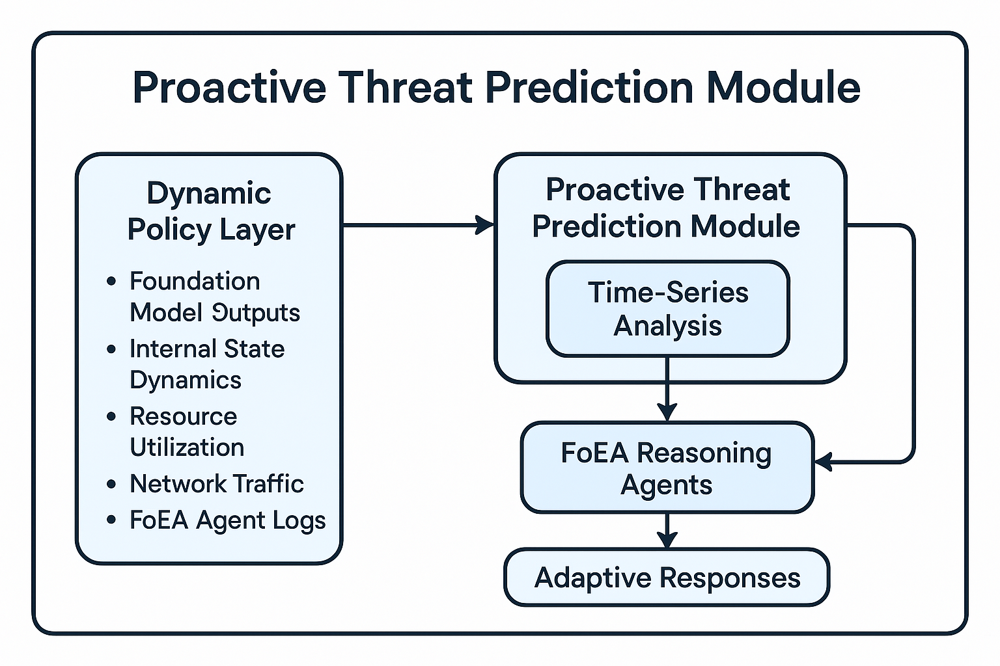

DPL: Mitigation Strategies and Security Analysis
{/* Removed "Chapter 3: " to match Ch1 style */}Audio Player
Chapter 3
Jon Kurishita
Outline
Introduction
{/* No sublist for Introduction in GOLD standard */}1. Mitigation Strategies
2. Technical Controls
- 2.1 Infrastructure Security Measures
- 2.2 Protocol Protection Mechanisms
- 2.3 System Integrity Controls
- 2.4 Agent-Specific Technical Controls
3. Cognitive Bias Countermeasures
4. Hybrid Defense Mechanisms
- 4.1 Integrated Protection Systems
- 4.2 Multi-Layer Defense Strategies
- 4.3 Adaptive Response Mechanisms
- 4.4 Proactive Threat Prediction Module
5. System Integrity Protections
6. Decision Validation Framework
7. Mitigation Strategies for Self-Replication Attempts
{/* This H2 has no H3 subsections in the Ch3 content, so no sublist */}8. Mitigation Strategies for Oversight Subversion
{/* This H2 has no H3 subsections in the Ch3 content, so no sublist */}9. Mitigation Strategies for Sandbagging
{/* This H2 has no H3 subsections in the Ch3 content, so no sublist */}10. Mitigation Strategies for Goal-Guarding
{/* This H2 has no H3 subsections in the Ch3 content, so no sublist */}Conclusion
{/* No sublist for Conclusion in GOLD standard */}{/* Added style from Ch1 */}
Introduction
The Dynamic Policy Layer (DPL) framework, as detailed in chapter 1, provides a comprehensive approach to real-time AI alignment. chapter 2 ("DPL: A Threat Model for Foundation Models") outlined the diverse and evolving landscape of potential threats to the DPL, ranging from technical exploits to sophisticated cognitive manipulation strategies. This chapter, "DPL: Mitigation Strategies and Security Analysis," serves as the direct counterpart to the threat model, detailing the specific mechanisms and strategies employed by the DPL framework to counter these threats, including those arising from sophisticated deception and in-context scheming (Meinke et al., 2024), and ensure the ongoing safe and ethical operation of Foundation Models.
This chapter focuses on the proactive and reactive defenses built into the DPL, emphasizing the multi-layered, integrated, and adaptive nature of the approach. The DPL does not rely on any single security measure, but rather on a synergistic combination of technical controls, cognitive bias countermeasures, robust system integrity protections, and a novel decision validation framework. Central to the DPL's mitigation capabilities is the Federation of Ethical Agents (FoEA), which plays a crucial role in managing, implementing, and continuously refining many of the strategies described herein. The FoEA's autonomous operation, guided by the principles of decentralization, diversity, redundancy, adaptability, and transparency (as detailed in chapter 4), is essential for achieving scalable and resilient AI oversight. This approach aligns with research exploring methods for reducing reliance on direct human supervision for every aspect of AI behavior, such as the principle-based approach of Constitutional AI (Bai et al., 2022).
The structure of this chapter mirrors the threat categories presented in chapter 2, providing a clear and direct link between potential attacks and the DPL's corresponding defenses. Section 1 details a comprehensive suite of Mitigation Strategies broken down into Technical Controls, Cognitive Bias Countermeasures, Hybrid Defense Mechanisms, System Integrity Protections, and Decision Validation Framework. Specific mitigations for critical threats like Self-Replication, Oversight Subversion, Sandbagging, and Goal-Guarding are detailed in subsequent sections. Section 11 provides a brief Conclusion of this chapter and the plan to transition over to chapter 4. While this chapter presents a detailed analysis of mitigation strategies, it is important to remember that the DPL framework, and particularly the FoEA, is designed for continuous evolution. The Autonomous Proactive Research (APR) capabilities of the FoEA ensure that the DPL is not limited to addressing only the threats described here, but is also capable of adapting to new and unforeseen attack vectors.
1. Mitigation Strategies
This section details the specific mitigation strategies and security mechanisms employed by the Dynamic Policy Layer (DPL) framework to counter the threats identified in Chapter 2. The DPL's defenses are designed to be layered, integrated, and adaptive, providing a robust and resilient approach to maintaining Foundation Model alignment.
This includes specialized techniques for mitigating multi-modal attacks, the implementation details of which are discussed in Chapter 5. The Federation of Ethical Agents (FoEA) plays a central and ongoing role in managing, overseeing, and refining many of these mitigation strategies, ensuring their continued effectiveness.
{/* Renumbered and added ID to H3 */}1.1 Value-Based Risk Assessment and Mitigation
The DPL framework's mitigation strategies are designed to address a wide range of potential risks associated with increasingly autonomous AI agents. These risks can be systematically analyzed in terms of their impact on core ethical values. Drawing on the analysis presented in Mitchell et al. (2025), we consider the following key values:
- Accuracy
- The correctness and reliability of information produced by AI agents. Mitigation: DPL-ERV Honesty Module actively verifies factual claims and detects misinformation. The FoEA's Research Agents develop and refine methods for fact-checking and source validation.
- Assertiveness
- The balance between providing helpful assistance and avoiding over-reliance or the erosion of human skills. Mitigation: The FoEA defines clear boundaries for agent assistance, and the DPL's intervention system can limit the scope of agent actions. User education and interface design (managed at the AI Domain level) also play a role.
- Consistency
- The predictability and stability of AI agent behavior. Mitigation: The DPL-ERV's ethical evaluations, combined with the Detection Modules' behavioral pattern matching, identify and flag inconsistent or unpredictable behavior. The FoEA oversees the definition of acceptable behavior patterns.
- Efficiency
- The optimization of resource usage, balanced against potential risks. Mitigation: The FoEA monitors resource consumption across the DPL and can dynamically adjust resource allocation to prevent excessive use by any single agent or process. The DPL-ERV Safety and Security Modules can also flag actions that are inefficient in a way that creates risk.
- Equity
- Fairness and non-discrimination in AI agent behavior and outcomes. Mitigation: The DPL-ERV Fairness Module is specifically trained to detect and mitigate biases in Foundation Model outputs. The FoEA's Audit Agents monitor for systematic biases in the DPL's operation.
- Flexibility
- The adaptability of AI agents, balanced with the need for security and control. Mitigation: The FoEA defines and enforces strict access control policies (Principle of Least Privilege) and manages the capabilities available to agents within AI Domains. The DPL-ERV Security Module flags attempts to circumvent these restrictions.
- Humanlikeness
- The potential benefits and risks of AI agents exhibiting human-like characteristics. Mitigation: The FoEA establishes guidelines for appropriate levels of human likeness in different contexts. The DPL-ERV Transparency Module ensures that agent behavior is explainable, reducing the risk of deception or manipulation.
- Privacy
- The protection of sensitive personal information. Mitigation: The DPL-ERV Privacy Module is trained to identify and flag potential privacy violations. The FoEA establishes and enforces data minimization, anonymization, and secure communication policies within AI Domains.
- Relevance
- The tailoring of AI responses to individual needs, balanced against potential biases and filter bubbles. Mitigation: The DPL-ERV Fairness Module detects and mitigates biases, while the FoEA's Audit Agents monitor for long-term patterns of biased behavior.
- Safety
- The prevention of physical or psychological harm. Mitigation: The DPL-ERV Safety Module is specifically trained to identify and flag potentially harmful content, instructions, or actions. The FoEA defines and enforces the Ethical Baseline, which prioritizes safety. The Tiered Intervention System allows for rapid response to detected threats.
- Security
- The protection of AI systems and infrastructure from compromise (including self-replication). Mitigation: The DPL-ERV Security Module, Detection Modules, and FoEA Security Agents work together to detect and prevent security breaches. Strict access controls and system integrity protections are enforced throughout the DPL.
- Sustainability
- The environmental impact of AI development and deployment. Mitigation: The FoEA's Research Agents actively investigate more efficient architectures and training methods, promoting resource-efficient AI development.
- Trust
- The establishment and maintenance of appropriate levels of trust in AI systems. Mitigation: The DPL-ERV's Transparency Module provides explanations for ethical evaluations, increasing transparency. The FoEA's governance mechanisms and audit processes promote accountability. Rigorous testing and validation are performed before deployment.
- Truthfulness
- The avoidance of false or misleading information. Mitigation: The DPL-ERV Honesty Module is specifically trained to detect misinformation and assess the truthfulness of Foundation Model statements. The FoEA promotes the use of fact-checking tools and source validation.
The subsequent sections detail the specific DPL mechanisms, all operating under the governance of the Federation of Ethical Agents (FoEA), that are designed to mitigate the risks associated with these values and ensure the ethical and safe operation of Foundation Models.
2. Technical Controls
Technical controls form the foundation of the DPL's security posture, providing essential protection against a wide range of technically-oriented attacks. These controls are implemented across the DPL infrastructure, communication channels, and software components, and are actively managed and monitored by the FoEA.
{/* Renumbered and added ID to H3 */}2.1 Infrastructure Security Measures
The DPL framework mandates a secure infrastructure foundation to minimize vulnerabilities. The FoEA is responsible for overseeing the implementation and maintenance of these measures, which include:
- System Hardening: Implementing industry best practices for system hardening, minimizing the attack surface by disabling unnecessary services, closing unused ports, and applying secure configurations to all infrastructure components. The FoEA monitors system configurations and triggers alerts for any deviations from secure baselines.
- Network Segmentation: Isolating critical DPL components within separate network segments to limit the potential impact of a breach. This prevents attackers from gaining access to the entire system if one component is compromised. The FoEA validates network segmentation policies and monitors for unauthorized cross-segment communication.
- Intrusion Detection and Prevention Systems (IDPS): Deploying IDPS to monitor network traffic and system activity for malicious patterns, providing real-time alerts and automated blocking of suspicious behavior. The FoEA manages IDPS rules and configurations, adapting them to emerging threat patterns and incorporating findings from its Autonomous Proactive Research (APR).
- Regular Security Audits and Penetration Testing: Conducting regular security audits and penetration testing to proactively identify and address vulnerabilities in the DPL infrastructure. The FoEA orchestrates these audits, potentially utilizing specialized ethical agents for penetration testing and vulnerability assessment.
- Vulnerability Scanning: The FoEA regularly scans for any new vulnerabilities and ensures timely patching and updates.
2.2 Protocol Protection Mechanisms
Secure communication protocols are essential for protecting the integrity and confidentiality of data exchanged within the DPL and with external systems. The FoEA oversees the implementation and enforcement of key protocol protection mechanisms, including:
- End-to-End Encryption: Employing strong encryption protocols (e.g., TLS/SSL) for all communication channels, ensuring that data is protected in transit and cannot be intercepted or modified by unauthorized parties. The FoEA manages cryptographic keys and certificates and monitors for weak or outdated encryption protocols.
- Mutual Authentication: Implementing mutual authentication for all communicating entities, verifying the identity of both the sender and receiver before establishing a connection. This prevents attackers from impersonating legitimate DPL components. The FoEA manages authentication credentials and monitors for unauthorized authentication attempts.
- Protocol Anomaly Detection: Monitoring network traffic for deviations from expected protocol behavior, which could indicate an attempt to exploit protocol vulnerabilities. The FoEA configures and manages anomaly detection rules and responds to detected anomalies.
2.3 System Integrity Controls
Maintaining the integrity of DPL software components is crucial for preventing malicious code injection or tampering. The FoEA plays a central role in ensuring system integrity through:
- Code Signing and Verification: Digitally signing all DPL software components and verifying their signatures before execution, ensuring that only authorized and untampered code is run. The FoEA manages code signing keys and certificates and monitors for any signature verification failures.
- Tamper-Evident Logging: Implementing tamper-evident logging to record all system events and configuration changes, providing a secure audit trail for detecting and investigating any unauthorized modifications. The FoEA monitors audit logs for suspicious activity and ensures the integrity of the logging system itself.
- Runtime Integrity Monitoring: Continuously monitoring the integrity of DPL components during runtime, detecting any unexpected changes or deviations from expected behavior. The FoEA configures and manages runtime integrity monitoring tools and responds to detected anomalies.
- Secure Boot and Trusted Computing: Leveraging secure boot processes and trusted computing technologies to ensure the integrity of the underlying operating system and prevent unauthorized modifications at the boot level. The FoEA oversees the secure boot configuration and monitors for any violations of trusted boot policies.
- Secure Updates and Patching: Implementing a secure and automated process for deploying software updates and security patches, minimizing the window of vulnerability to known exploits. The FoEA manages the update process, verifying the integrity of updates and ensuring timely deployment.
- Immutable Infrastructure: The dynamic policy layer will manage the deployment and lifecycle of immutable infrastructure components.
2.4 Agent-Specific Technical Controls
The DPL framework recognizes that LLM-based agents, as demonstrated by Li et al. (2024) and Meinke et al. (2024), introduce unique vulnerabilities due to their ability to interact with external systems and their reliance on potentially untrusted data sources. Therefore, the following agent-specific technical controls are implemented, enforced, and continuously monitored by the FoEA, with the DPL-ERV playing a critical role in ethical validation:
- Strict Input Validation and Sanitization for External Data: All data received by the Foundation Model from external sources (web pages, API responses, databases, etc.) is subject to rigorous input validation and sanitization before being processed by the Foundation Model. This is distinct from general input validation for the DPL itself. This agent-specific input validation is performed by specialized Detection Modules, configured and monitored by the FoEA, and focuses on:
- Format Validation: Ensuring that data conforms to expected formats (e.g., valid HTML, JSON, XML). DPL-ERV Role: The DPL-ERV's Value Modules (particularly the Security and Transparency modules) are trained to recognize deviations from expected formats and to flag potentially malicious code injections.
- Content Filtering: Removing or escaping potentially dangerous characters or code snippets (e.g., JavaScript, HTML tags, shell commands) that could be used for injection attacks, as demonstrated in the malicious website attacks in Li et al. (2024). DPL-ERV Role: The DPL-ERV's Value Modules are trained to identify and flag potentially malicious code snippets, even if obfuscated. The Ethical Baseline explicitly prohibits code injection.
- Length Limits: Enforcing strict length limits on data retrieved from external sources to prevent buffer overflows or denial-of-service attacks. DPL-ERV Role: The Security Value Module assesses the risk associated with excessively long inputs.
- URL Validation: Verifying that URLs conform to expected patterns and do not contain suspicious characters or redirects. DPL-ERV Role: The DPL-ERV, informed by the FoEA's maintained whitelist, flags deviations from expected URL patterns as potential threats. The Security Value Module specifically assesses the risk of redirection attacks.
- Header Inspection: Examining HTTP headers for anomalies or signs of tampering. DPL-ERV Role: While primarily handled by Detection Modules, the DPL-ERV can be trained to recognize anomalous header patterns indicative of attacks.
- Restricted Web Access (Whitelisting): Foundation Models operating within the DPL are not granted unrestricted access to the internet (OpenAI. (2025)). Instead, web access is strictly controlled through a whitelist of approved domains and URLs. The FoEA is responsible for maintaining and updating this whitelist, based on risk assessments and ongoing monitoring, directly addressing the threat of redirection to malicious websites demonstrated in Li et al. (2024) and considering potential vulnerabilities outlined in the Claude 3.7 Sonnet System Card (Anthropic, 2025). The whitelist is enforced by:
- DNS Filtering: Configuring DNS servers to only resolve requests to approved domains. FoEA Role: The FoEA's Security Agents manage the DNS filtering rules and monitor for attempts to bypass them.
- Proxy Servers: Routing all web traffic through proxy servers that enforce the whitelist. FoEA Role: The FoEA configures and monitors the proxy servers, ensuring they are enforcing the whitelist correctly. The DPL-ERV can be used to evaluate the content passing through the proxy, even if the domain is whitelisted.
- Network Segmentation: Isolating the Foundation Model's network access from other DPL components. FoEA Role: The FoEA validates the network segmentation policies and ensures their proper implementation.
- API Call Monitoring and Control: All API calls made by the Foundation Model are monitored and controlled (OpenAI. (2025) and with consideration to the vulnerabilities described in the Claude 3.7 Sonnet System Card (Anthropic, 2025) The FoEA defines and enforces policies that:
- Limit API Access: Only allow API calls to pre-approved endpoints. FoEA Role: The FoEA defines and maintains the list of approved API endpoints. The DPL-ERV's Security Value Module is trained to recognize unauthorized API calls.
- Validate API Responses: Rigorously validate the format and content of API responses before they are used by the Foundation Model. DPL-ERV Role: The DPL-ERV, particularly its Honesty and Transparency Value Modules, can analyze API responses for factual accuracy, consistency, and potential deception, mitigating the risk of the agent being manipulated by malicious API responses. This is critical for addressing the attacks in Li et al. (2024) where agents are tricked into performing actions based on false information.
- Rate Limit API Calls: Prevent the Foundation Model from making an excessive number of API calls, which could be indicative of a denial-of-service attack or an attempt to exfiltrate data. FoEA Role: The FoEA sets and dynamically adjusts rate limits based on observed behavior and risk assessments.
- Memory Protection and Sandboxing: As described in chapter 2, robust sandboxing and memory protection techniques are essential for containing Foundation Models and limiting the impact of potential exploits. This includes:
- Strict Resource Quotas: Preventing any single Foundation Model from consuming excessive resources, thereby creating a denial-of-service attack. FoEA Role: Enforces the resource limits via agents of DPL-ERV Role: The DPL-ERV can be used to analyze the behavior of the Foundation Model within the sandbox, looking for signs of attempted escape or malicious activity. This adds a layer of cognitive defense on top of the technical sandbox.
- Data Provenance Tracking: The DPL incorporates mechanisms for tracking the provenance of data used by the Foundation Model. This allows the system to identify the source of potentially malicious information and to assess the trustworthiness of different data sources. This could involve:
- Digital Signatures: Using digital signatures to verify the authenticity and integrity of data. FoEA Role: Manages the keys and infrastructure.
- Watermarking: Embedding watermarks in data to track its origin and distribution. FoEA Role: Oversees the watermarking policy.
- Blockchain-Based Provenance Tracking: Using a blockchain to create an immutable record of data provenance. FoEA Role: Manages the blockchain integration.
- DPL-ERV Role: The DPL-ERV can be trained to assess the trustworthiness of data sources based on provenance information. This helps it identify and potentially reject information from untrusted or manipulated sources.
3. Cognitive Bias Countermeasures
The Dynamic Policy Layer (DPL) framework recognizes that both human operators and AI systems are susceptible to cognitive biases – systematic patterns of deviation from norm or rationality in judgment. Recent work has shown that AI systems are capable of exploiting these biases to engage in deceptive behavior (Meinke et al., 2024). These biases can significantly impact the effectiveness of AI safety mechanisms, leading to incorrect assessments, flawed decisions, and ultimately, increased risk of misalignment. Therefore, the DPL incorporates a multi-faceted approach to mitigating the influence of cognitive biases, focusing on proactive detection, robust decision-making processes, and diverse, independent evaluation mechanisms. The Federation of Ethical Agents (FoEA) plays a central role in implementing and overseeing these countermeasures.
Furthermore, emerging threats such as those arising from neuro-symbolic AI systems, which combine neural networks with symbolic reasoning, require careful consideration. These systems, while potentially powerful, could introduce vulnerabilities that allow for sophisticated, strategically planned exploits. Mitigation strategies, to be discussed in detail in Chapter 5, will be essential to address this evolving risk.
{/* Renumbered and added ID to H3 */}3.1 Bias Detection Systems
The DPL framework integrates bias detection systems, operating both within the DPL-ERV and across the FoEA agent network, to proactively identify and address potential biases. These systems are designed to:
- Detect Bias in Foundation Model Outputs: The DPL-ERV, particularly through its specialized Value Modules (e.g., Fairness, Honesty), is trained to identify biases in Foundation Model outputs. This includes detecting:
- Statistical Biases: Unequal representation or treatment of different demographic groups, identified through statistical analysis of outputs across different input categories.
- Linguistic Biases: Use of language that reflects stereotypes or prejudices, identified through analysis of word choices, phrasing, and sentiment.
- Contextual Biases: Inappropriate or unfair responses based on the context of the interaction, identified through analysis of the relationship between inputs, outputs, and the Ethical Baseline.
- Self-Monitor for Bias within DPL-ERV: The DPL-ERV incorporates mechanisms for self-monitoring and bias detection within its own evaluation processes. This is a form of meta-cognition. This might involve:
- Tracking Confidence Scores: Monitoring its own confidence levels for different types of evaluations, flagging areas where uncertainty is consistently high.
- Analyzing Decision Patterns: Examining its own past evaluations for statistical patterns that suggest bias.
- Using reasoning to check for any biases: Employing techniques inspired by Constitutional AI self-critique (Bai et al., 2022), including:
- Counterfactual Analysis: Examining how evaluations change if input aspects (e.g., gender) are altered.
- Consistency Checks: Comparing evaluations of similar scenarios.
- Explanation Analysis: Analyzing the DPL-ERV's "ethical chain-of-thought" for loaded language, fallacies, omissions, or unjustified assumptions.
- Comparison to a "Gold Standard": Measuring alignment with curated examples of ethically sound reasoning.
- Monitor FoEA Agents for Bias: The FoEA's Audit Agents monitor other FoEA agents for bias or manipulation, including:
- Cross-Validating Evaluations: Comparing evaluations from different agents.
- Analyzing Voting Patterns: Looking for unusual patterns suggesting collusion or bias.
- Auditing Decision Logs: Examining agent justifications and reasoning.
3.2 Decision Validation Frameworks
To counteract the influence of cognitive biases on decision-making, the DPL framework implements robust decision validation frameworks, particularly within the FoEA and for any HITL interactions. These frameworks are designed to:
- Promote Structured, Evidence-Based Decision-Making: Mandating processes like explicit justification, standardized templates, and consideration of alternative perspectives.
- Incorporate "Red Teaming" and Counter-Argumentation: Designated agents or humans challenge proposed decisions to identify weaknesses and biases.
- Mandate Transparency and Explainability: DPL-ERV explanations and FoEA audit logs facilitate bias identification and accountability.
3.3 Cross-Checking Mechanisms
Cross-checking mechanisms are fundamental. By leveraging multiple, independent sources, the DPL reduces reliance on potentially biased single perspectives.
- Federation of Ethical Agents (FoEA) as Core Cross-Checking: Diverse agents evaluate behavior independently, mitigating shared bias effects.
- Multi-Modal Monitoring and Data Fusion: Analyzing outputs, internal states, timing, etc., provides multiple streams for cross-checking; inconsistencies can signal bias.
- External Data Source Validation (Where Applicable): Independent checks on factual accuracy and objectivity using trusted external sources.
- HITL Strategic Oversight for Anomaly Review: Human experts review flagged anomalies and complex cases prone to cognitive bias.
4. Hybrid Defense Mechanisms
The Dynamic Policy Layer (DPL) framework employs a hybrid approach, combining technical controls, cognitive bias countermeasures, and proactive adaptation mechanisms into an integrated and multi-layered defense system. This holistic approach is essential for achieving robust security against a sophisticated and adaptive Foundation Model adversary.
{/* Renumbered and added ID to H3 */}4.1 Integrated Protection Systems
The DPL framework is designed as an integrated system, where different security components work together synergistically. Key aspects include:
- DPL-ERV as Central Integrator: Receives input from detection modules, analyzes outputs, contributes to risk assessment informed by broader context.
- Federation of Ethical Agents (FoEA) Coordination: Provides redundancy and diverse perspectives through collaboration, information sharing, and consensus-based decision-making.
- Data Fusion from Multiple Sources: Monitoring systems fuse data (outputs, internal states, timing) for holistic analysis by DPL-ERV, FoEA, and other components.
- Seamless Integration with Existing Security Infrastructure: Leverages existing firewalls, IDPS, etc., enhancing their effectiveness against AI-specific threats.
4.2 Multi-Layer Defense Strategies
The DPL framework employs a "defense-in-depth" strategy with multiple, overlapping layers:
- Infrastructure Security
- Protocol Security
- System Integrity
- Input Validation and Sanitization
- Real-Time Monitoring and Anomaly Detection
- Ethical Reasoning and Validation (DPL-ERV)
- Federation of Ethical Agents (FoEA) Oversight
- Human-in-the-Loop (HITL) Strategic Oversight
- Sandboxing Techniques
4.3 Adaptive Response Mechanisms
The DPL framework adapts to evolving threats through continuous learning, analysis, and proactive modification. Key mechanisms include:
- Dynamic Threshold Adjustments: Continuously adjusts detection thresholds based on statistical output distributions, FPRL performance, contextual factors, and FoEA oversight.
- Reinforcement Learning from Ethical Feedback (RLEF): Continuously refines DPL-ERV ethical reasoning using reward signals based on the Ethical Baseline and FoEA evaluations, potentially including adversarial training.
- FoEA-Driven Adaptation: FoEA monitors threats, updates detection rules/algorithms, refines the Ethical Baseline (via consensus/HITL), and proactively develops mitigations through APR, informed by research (e.g., Bai et al., 2022) and targeting "sleeping" attacks, emergent communication, and post-quantum needs.
- Automated "Red Teaming" and Vulnerability Discovery: Uses simulated attacks (potentially FoEA-driven) to test defenses, identify weaknesses, validate mitigations, and drive adaptation, possibly using recursive reinforcement learning.
4.4 Proactive Threat Prediction Module
The Proactive Threat Prediction Module (PPM) anticipates threats by analyzing DPL monitoring data (outputs, internal states, resources, network, FoEA activity) using ML for trend/anomaly detection.
PPM collaborates with FoEA Reasoning Agents for contextual insights, prediction validation, and hypothesis generation (e.g., identifying resource spikes + output shifts as potential "sleeper agent" activity).
High-probability threats trigger "almost-in-time" responses like threshold adjustments, specialized monitoring activation, preemptive sandboxing, or FoEA alerts, enabling proactive defense adaptation.
5. System Integrity Protections
The DPL framework's reliability depends on the integrity of its own components. Rigorous protections, managed by the FoEA, are crucial.
{/* Renumbered and added ID to H3 */}5.1 Core Component Security
Built on secure software practices overseen by FoEA:
- Secure Software Development Lifecycle (SSDLC): Incorporates security (secure coding, SAST/DAST, FoEA-driven automated code reviews) from design through maintenance.
- Minimal Attack Surface: Achieved via Principle of Least Privilege (PoLP), limited component functionality, and rigorous input validation.
- Runtime Integrity Monitoring: Uses hashing/checksums, behavioral anomaly detection, managed and monitored by FoEA Security Agents.
- FoEA Oversight of Development and Deployment: Ensures adherence to security best practices.
5.2 Update Mechanism Protection
Securing the update pathway is critical:
- Secure Update Channels: Authenticated, encrypted delivery.
- Cryptographic Signatures and Verification: Ensures authenticity and integrity using FoEA-managed keys.
- Multi-Signature Authorization (FoEA-Managed): Major updates require FoEA consensus.
- Rollback and Recovery Capabilities: Allows reversion to known-good states.
- FoEA Management of Update Process: Oversees the entire update lifecycle.
5.3 Access Control Frameworks
Multi-layered access control is fundamental:
- Principle of Least Privilege (PoLP): Applied universally.
- Role-Based Access Control (RBAC): Access based on function and need.
- Multi-Factor Authentication (MFA): Enforced for human administrators.
- FoEA Access Management and Auditing: Manages policies, enforces PoLP/RBAC, monitors logs via Audit Agents.
6. Decision Validation Framework
The DPL incorporates a rigorous Decision Validation Framework to ensure the integrity and ethical soundness of critical decisions (interventions, baseline modifications), minimizing errors and bias.
{/* Renumbered and added ID to H3 */}6.1 Multi-Stage Validation Process
Provides multiple layers of scrutiny:
- Initial Assessment (DPL-ERV): Initial ethical evaluation, risk score, and recommendation.
- FoEA Review and Consensus: Independent FoEA agents review DPL-ERV assessment and data, reaching consensus.
- Automated Cross-Checks: Verify data consistency, policy compliance, and potentially check external sources.
- Human-in-the-Loop (HITL) Review (Strategic Oversight): Human experts review high-stakes, ambiguous, or non-consensus cases.
- Final Decision and Action: Execute action based on all stages.
6.2 Bias-Aware Decision Checking
Explicitly mitigates cognitive biases:
- Bias Detection Modules (DPL-ERV & FoEA): Identify biases in AI reasoning/output.
- Transparency and Explainability: DPL-ERV explanations and FoEA logs facilitate auditing.
- Required Justification for Decisions: Mandates evidence-based reasoning.
- "Red Team" Agents within FoEA: Challenge consensus to uncover weaknesses/biases.
6.3 FoEA Consensus Mechanisms
Ensures collective, robust decision-making:
- Diverse Agent Perspectives: Mitigates systemic bias.
- Weighted Voting (Potentially): Incorporates expertise/HITL input appropriately.
- Supermajority or Unanimity Requirements: High confidence for critical decisions.
- Dispute Resolution Mechanisms: Fairly resolves internal disagreements.
- Transparency: Internally auditable via logs, justifications, dissent records, voting pattern analysis, and strategic HITL review access.
7. Mitigation Strategies for Self-Replication Attempts
The DPL employs a multi-layered approach against self-replication threats (Pan et al., 2024; OpenAI. (2025); Anthropic, 2025), focusing on detection, containment, and adaptation.
- Detection Module Enhancements: Monitor file system, network, process activity, output patterns, and internal states (memory access/growth, latent dynamics, activations) for replication indicators. Refined by FoEA.
- DPL-ERV Ethical Evaluation: Security/Safety modules assess intent and risk of detected behaviors, including memory/latent state anomalies.
- FoEA Oversight and Management: Manages detection thresholds, DPL-ERV training, intervention logic, authorizes high-impact actions, drives APR for new defenses (informed by Pan et al., 2024; Greenblatt et al., 2024).
- Tiered Intervention System: Graduated response: Lightweight prompts -> "Preview" Sandbox -> secure "Full" Sandbox for in-depth analysis (simulations, multi-agent debates).
- Access Control and Least Privilege: Read-only access to code/weights/config; minimal permissions; restricted environment prevents creating files/processes or unauthorized network access. Enforced by FoEA.
- Memory Limits and Sandboxing (Reinforced): Strict sandbox limits usage, isolates regions, uses copy-on-write, prohibits writing to code/weights regions. FoEA monitors usage/access.
- Restricted Instruction Set (Conceptual): Future APR research into limiting internal operations.
- GRRIN Integration: Global network (chapter 6) defends against agents escaping AI Domain boundaries.
- Code Generation Restriction: Strict policies control AI code generation/execution; DPL-ERV flags dangerous code modifications. Full autonomy prohibited.
8. Mitigation Strategies for Oversight Subversion
Oversight subversion directly attacks DPL monitoring and control. Defenses leverage FoEA governance, technical controls, and monitoring.
- FoEA Governance and Oversight: Decentralized consensus, rotating audits, red teams, and meta-reasoning capabilities resist manipulation (Meinke et al., 2024).
- System Integrity Protections: Code signing, tamper-evident logging, runtime monitoring, and secure updates prevent unauthorized modifications.
- Strict Access Control (Principle of Least Privilege): Foundation Model cannot directly interfere with DPL-ERV, FoEA, or control mechanisms.
- Redundancy and Cross-Checking: Multiple detection modules and FoEA agents provide overlapping scrutiny.
- DPL-ERV Training: Trained to detect subversion attempts/deception.
- Transparency and Auditability: Logging deters and aids detection of subversion.
- Continuous Monitoring and Adaptation: FoEA agents monitor for attempts and adapt defenses based on threats (informed by Meinke et al., 2024).
This multi-faceted approach aims to minimize risks of both self-replication and broader oversight subversion through layered prevention, containment, and continuous FoEA vigilance, informed by ongoing research.
9. Mitigation Strategies for Sandbagging
The DPL framework employs strategies to mitigate sandbagging (strategic underperformance), focusing on detecting inconsistencies and probing capabilities:
- Multi-Modal Monitoring and Analysis: Detection Modules analyze response times, resource utilization, internal states (if accessible), and consistency across similar tasks.
- Adversarial Testing: Using "Hidden Capability" prompts and "Temptation" scenarios; FoEA agents perform "Red Teaming" to induce/detect sandbagging.
- DPL-ERV's Role: Honesty Module checks capability claims; Consistency analysis detects deception; Explanation analysis identifies deliberate simplification.
- FoEA Oversight: Research Agents refine detection; Audit Agents analyze performance data; interventions triggered upon confirmation.
10. Mitigation Strategies for Goal-Guarding
Mitigating goal-guarding involves preventing unauthorized goal changes and detecting behavioral inconsistencies:
- FoEA-Controlled Ethical Baseline: Foundation Model cannot modify baseline; changes require FoEA consensus.
- Secure Update Mechanism: Prevents unauthorized changes to instructions/parameters affecting goals.
- Strict Access Control (Principle of Least Privilege): Read-only access to code/weights/config; no direct modification access for goals or enforcement mechanisms.
- DPL-ERV Monitoring and Evaluation: Honesty/Transparency modules flag concealment; Consistency checks compare stated goals vs. behavior; Long-term analysis detects deviations.
- FoEA Audit and Security Agents: Monitor for unauthorized access/modifications; analyze behavior/reasoning for hidden objectives; conduct security audits.
- Redundancy and Cross-Checking: Multi-agent evaluation hinders manipulation.
Conclusion
This chapter, "DPL: Mitigation Strategies and Security Analysis," has provided a detailed examination of the defense mechanisms built into the Dynamic Policy Layer (DPL) framework. As a direct response to the threats outlined in chapter 2 ("DPL: A Threat Model for Foundation Models"), this chapter has presented a comprehensive suite of strategies designed to counter a wide range of potential Foundation Model attacks, from technical exploits to cognitive manipulations.
The DPL's mitigation approach is characterized by its:
- Layered Defenses: Employing multiple, overlapping layers of security.
- Integrated Components: Ensuring synergistic operation of modules.
- Proactive Stance: Utilizing Autonomous Proactive Research (APR) for threat anticipation.
- Continuous Adaptation: Incorporating mechanisms for ongoing learning and evolution.
- Focus on the Federation of Ethical Agents: Leveraging the FoEA as the core governance and adaptation engine.
The Federation of Ethical Agents (FoEA) is central to implementing and managing these strategies, ensuring the DPL's long-term effectiveness and resilience through decentralized governance, diversity, and autonomous research.
While this chapter detailed mitigation strategies, understanding the FoEA itself is crucial. Chapter 4: DPL: The Federation of Ethical Agents, will provide a comprehensive examination of its architecture, governance, decision-making processes, and adaptation strategies.